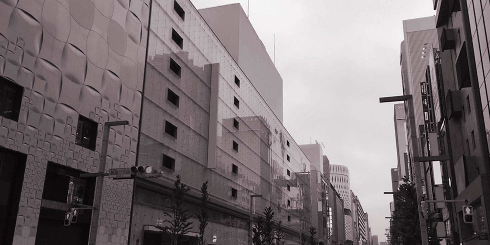
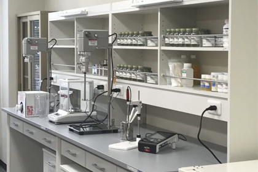
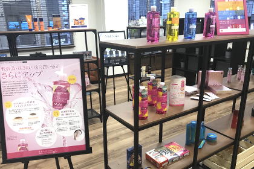
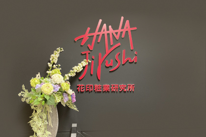
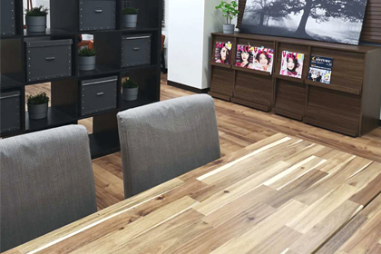

Company
Company
会社概要
Japanese skincare, from Ginza, Tokyo to the world.

01Message
From Ginza,to the world.
(Message from the Representative Director to be supplied — around 150–250 words on the company's founding, approach to product-making and global ambitions.)
Hanajirushi Institute of Cosmetics, Inc.
Representative Director Name TBC
02Profile
Company profile
会社概要
| Company name | Hanajirushi Institute of Cosmetics, Inc. 花印粧業研究所株式会社 |
|---|---|
| Founded | 28 January 2015 |
| Head office | 2-12-12 Ginza, Chuo-ku, Tokyo 104-0061, Japan (Miyama Bldg. 2F) |
| TEL / FAX | TEL +81-3-6264-2154 ／ FAX +81-3-6264-2354 |
| Representative | Representative Director Name TBC |
| Business | R&D, manufacturing, sales, import and export of cosmetic raw materials, cosmetics and health foods |
| Markets | Japan and 12 countries across East Asia, Southeast Asia and North America Country list TBC |
| Corporate number | TBC |
Corporate structure
HANAJIRUSHI is a Japanese skincare brand headquartered in Ginza, Tokyo, with R&D and product development based in Japan. Our China market operations are managed through [China operating company] TBC, covering Tmall, Douyin and offline retail including Watsons. Global distribution enquiries are handled directly by our Tokyo head office.
03Business
Our business
事業内容
R&D, manufacturing, sales, import and export of cosmetic raw materials, cosmetics and health foods

一01
Research & development
Formulation from the raw-material level in our own laboratory — balancing gentleness and results.

二02
Manufacturing
Cosmetics manufacturing in Japan, delivering made-in-Japan quality to customers at home and abroad.

三03
Sales & trade
We handle import and export ourselves, supplying partners in 12 countries.
04History
History
沿革
Dates to be confirmed.
Jan 2015
Hanajirushi Institute of Cosmetics founded in Ginza, Tokyo
Date TBC
Deep Cleansing Lotion, Hatomugi Skin Conditioner and other core products launched
Date TBC
Entered the China market (Tmall, Douyin, Watsons)
Date TBC
First officially licensed Japanese IP collaboration
Jul 2022
Corporate website renewed
Sep 2026
English website launched; overseas partnership programme opened
Nov 2026
Exhibiting at Cosmoprof Asia 2026, Hong Kong
05Office
Our Ginza office
オフィス紹介
Our head office in Ginza 2-chome houses our laboratory, showroom and meeting rooms.


Entrance 
Meeting room
06Access
Access
アクセス
- Address
- 2-12-12 Ginza, Chuo-ku,
Tokyo 104-0061, Japan (Miyama Bldg. 2F) - Stations
- Ginza-itchome Station (Yurakucho Line)
Ginza Station (Ginza, Marunouchi, Hibiya Lines)
Walk min TBC - TEL
- +81-3-6264-2154
- FAX
- +81-3-6264-2354
- Hours
- Mon–Fri 10:00–18:00 (JST)